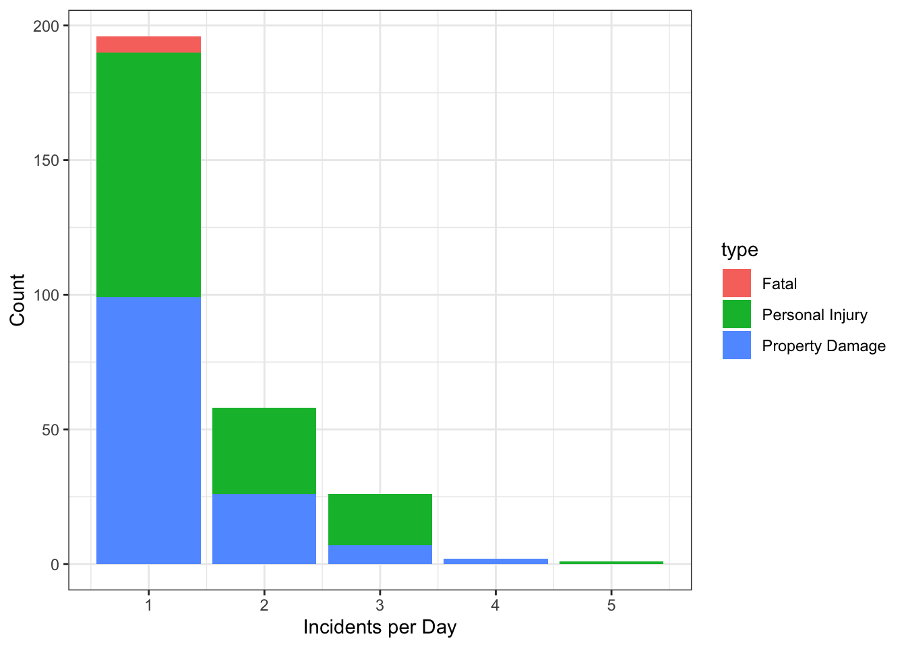

tar_load(ett_data)3 Methodology
To estimate the impact of Utah’s IMT program expansion, we collect data from UDOT and UHP and model the impacts with a linear regression analysis.
3.1 Data
Describe the UHP incident database.
Describe the UDOT incident database.
Describe efforts to clean and filter the data for usable records.
ds_tab <- datasummary_balance(~ type,
data = ett_data |>
transmute(
type, `IMT responding` = n_imt, `UHP responding` = n_uhp,
`Response time` = rt_imt, `Roadway clearance time` = rct_imt,
`Incident clearance time` = ict_imt,
`Total lanes on roadway` = lanes_bottle,
`Lanes closed for incident` = lanes_closed,
`Affected volume` = vol_affect,
`Excess travel time` = ett,
Year = year,
Period = period),
output = 'kableExtra'
) Warning: The difference in means can only be calculate with two groups in the
right-hand side variable. Set `dinm=FALSE` to suppress this warning.ds_tab |>
kable_styling(position = "center") |>
landscape()| Mean | Std. Dev. | Mean | Std. Dev. | Mean | Std. Dev. | ||
|---|---|---|---|---|---|---|---|
| IMT responding | 2.2 | 1.0 | 1.5 | 0.7 | 1.4 | 0.7 | |
| UHP responding | 10.5 | 3.7 | 3.5 | 1.7 | 2.9 | 1.4 | |
| Response time | 34.9 | 30.5 | 14.5 | 9.4 | 14.8 | 10.2 | |
| Roadway clearance time | 198.2 | 33.8 | 50.0 | 31.6 | 37.0 | 30.9 | |
| Incident clearance time | 190.5 | 8.9 | 65.5 | 35.3 | 59.7 | 28.7 | |
| Total lanes on roadway | 5.3 | 0.5 | 5.1 | 1.3 | 5.2 | 1.1 | |
| Lanes closed for incident | 4.2 | 1.6 | 2.0 | 1.1 | 1.9 | 0.9 | |
| Affected volume | 7029.2 | 4739.6 | 6978.7 | 5035.0 | 7218.5 | 4878.6 | |
| Excess travel time | 1608.0 | 2832.2 | 655.5 | 1052.8 | 572.5 | 876.5 | |
| Year | 2020.7 | 2.1 | 2012.2 | 124.1 | 2010.0 | 134.8 | |
| N | Pct. | N | Pct. | N | Pct. | ||
| Period | Afternoon Off Peak | 3 | 50.0 | 87 | 40.1 | 62 | 34.4 |
| AM Peak | 0 | 0.0 | 42 | 19.4 | 46 | 25.6 | |
| Morning Off Peak | 2 | 33.3 | 1 | 0.5 | 1 | 0.6 | |
| Night Off Peak | 1 | 16.7 | 21 | 9.7 | 4 | 2.2 | |
| PM Peak | 0 | 0.0 | 66 | 30.4 | 67 | 37.2 |
Table 3.1 presents descriptive statistics of the cleaned incident data by crash severity. Virtually all of the records are either property damage or personal injury crashes (approximately half each), with a handful of fatal crashes. The mean excess travel time for these fatal crashes is approximately three times higher than for the other more common crash types, though the wide standard errors and the high degree of skewness make conclusive statements about this question somewhat difficult.
ett_data |>
group_by(date, type) |>
summarise(n = n()) |>
ggplot(aes(x = n, fill = type)) +
geom_bar() +
xlab("Incidents per Day") +
ylab("Count") +
theme_bw()
Figure 3.1 shows a distribution of incidents by day. This might not be the most relevant plot, but it’s the one that I put together.
3.2 Models
We hypothesize that the increase in IMT units decreased response time as well as decreased excess travel time. This suggests two models, \[ \log(\mathrm{IMT\ Response\ Time}_i) = X_i\beta \] and \[ \log(\mathrm{Excess\ Travel\ Time}_i) = X_i\beta + \delta\log(\mathrm{IMT\ Response\ Time}_i) \] where the index \(i\) denotes a single incident, \(X\) is a vector of controlling variables — the number of responding units, the size of the roadways, etc. — and \(\beta\) are estimated coefficients.